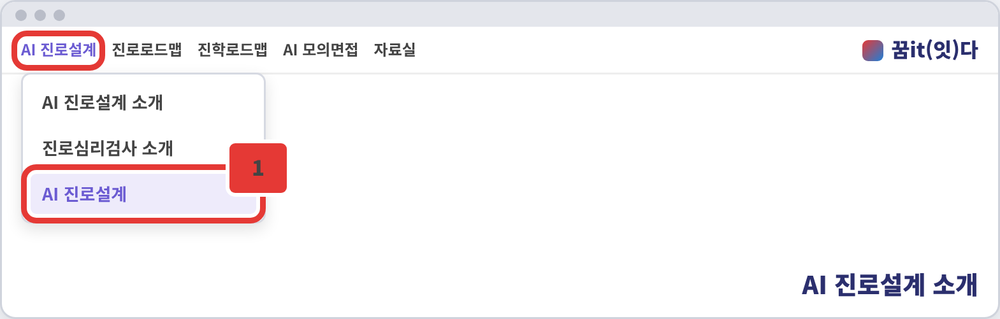
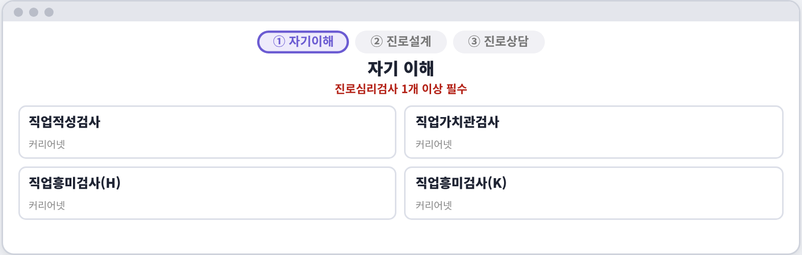
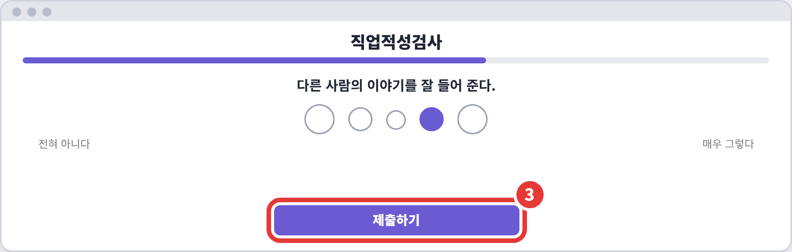
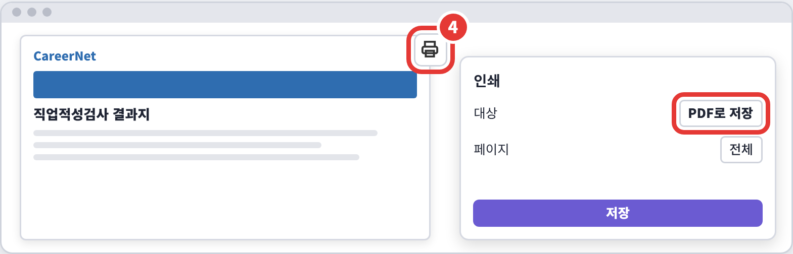
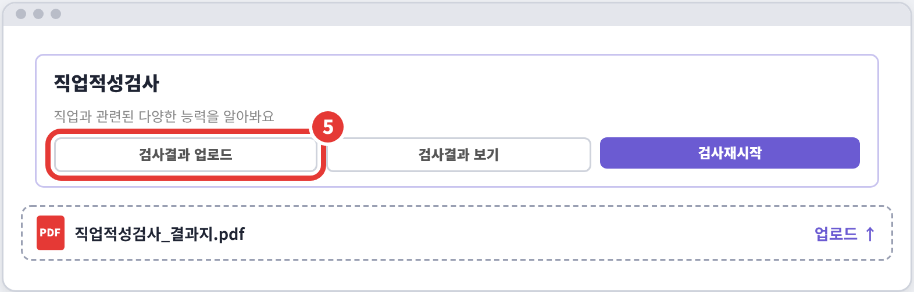
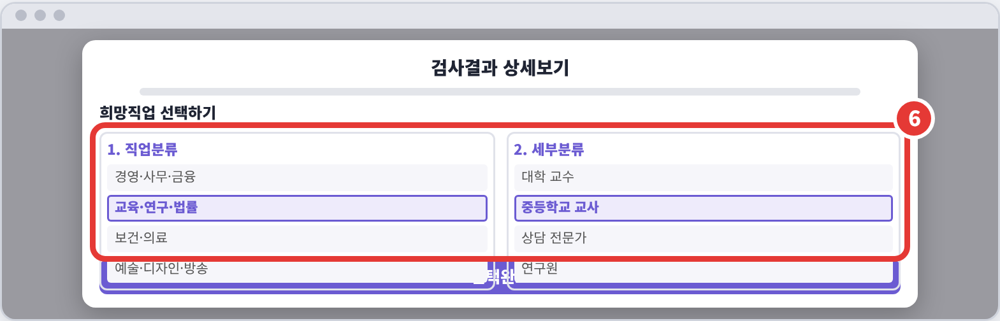

STEP 01 · 자기이해
검사하고, 결과 올리고, 희망 직업까지 골라요
jinro.goedu.kr
매탄중학교 진로상담실
1
1-3 검사 · 1 / 6

2
1-3 검사 · 2 / 6

3
1-3 검사 · 3 / 6

4
1-3 검사 · 4 / 6

5
1-3 검사 · 5 / 6

6
1-3 검사 · 6 / 6

잠깐!
이동
[검사시작]을 누르면 커리어넷 사이트로 이동해 로그인·본인 인증 후 검사해요.
주의
결과지는 PDF로 내 태블릿에 저장만 할 수 있고, 꿈it(잇)다에는 업로드되지 않아요.
필수
검사는 1개 이상, 3개 이상이면 더 좋아요.
TIP
저장한 PDF 파일 이름을 기억해 두기!
다음
검사 결과는 1-4 심리검사 결과정리에 쓰여요.
1-3 진로심리검사 한 장용